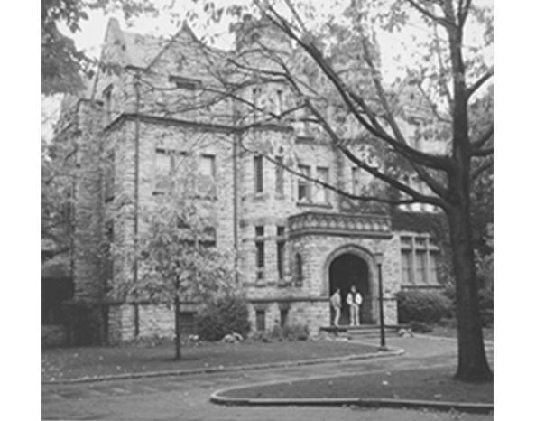

Chapter 20 on the roll
The Tau


- Position on the roll#20
- InstitutionUniversity of Pennsylvania
- Chartered1891
- StatusActive since 1891
- Coat of armsfull-size PDF
Its printed history

Notable brothers of the Tau


In the archive
Pages that name the Tau Chapter or its institution.
Named on 938 pages across 325 volumes of the archive.
…si Upailon in Convention assembled: We, the undersigned, students of the university of Pennsylvania, being de sirous ,of becoming members of your Fraternity, do hereby petition you togrant us a chapter at the said University. (Signed), A. T. Dobson,…
…and the -comrade The applications for Chapters from Lehigh College and the University of Pennsylvania were referred to spe ship, which is as good as speech. The proper study of life is the logic of results. Mo cial committee, to report to the Executiv…
Page3…establishing a Chapter Psi Upsilon in Literature. of our Fraternity in the University of Pennsylvania, The Theistic Argument as Affected by Eecent The and granting the application of the Sigma Chapter of ories ; by Prof. J. Lewis Diman.Edited by Prof.…
Page12…versity of Pennsylvania holds out, but are in blissful ig high and against University of Pennsylvania. I am norance as to the exact place to locate The Lehigh Uni sorry to state that my opinion is a similar one as for versity, and the proper grade of…
Page6…n 1884, and by the concurrent foundation in 1891 of the Mu chapter at the University of Pennsylvania and the Tau chapter at the University of Minnesota the last-named the twenty-first on j the capitular roll. In these same years twelve more con ve…
Page6…, 1868 ; D.D., ad eundem. University of the City of New York, 1869. At the University of Pennsylvania, 1830-33; at Amherst College, 1833-34. Commencement Disputation, 1834. Teacher at Fayetteville, N. C, 1834-36. Student of Theology, 1836-39. Resident…
…CONVENTION OF THE PSI UPSILON FRATERNITY: The undersigned members of the University of Pennsylvania, respectfully ask that a Charter may be granted for a Chapter of the Fraternity in connection with that Institution, and refer to the list of graduat…
…eral Resolution No. 11, of 1888, upon the applicants for a Chapter at the University of Pennsylvania. The amendment was lost by the following vote : Total, 8. No. B, Z, A, K, TP-, I, $, n, X, BB, 3d Alumni ; Total, 11. Bro. Haight addressed the Con…
…o. J. D. E. Spaeth (7", '88) addressed the Convention in behalf of the new Tau Chapter. On iQotion, the Convention adjourned until May 8th, at 10 A. M. FRIDAY, MAY 8, 1891. The Convention was opened by the President at 10 A. M., afte…
…s and the next song (on page 198) were written for the installation of the Tau Chapter, which took place May 5, 1891. ROUND OUK ALTAR. [Page 202.] " This song stood on the last page of the first edition of the Song-book, under the titl…
Page252…y in 1876, Trinity College in 1880, and the Lehigh University in 1884. The University of Pennsylvania and the University of Minnesota received charters in 1891. Twenty-one universities and colleges, embracing nearly all the leading educational instit…
…. Pool, '96, and Louis Diven, '97, were editors of the same paper. Tau. University of Pennsylvania. Our representative in the University of Pennsylvania reported for the past college^
…. University of Pennsylvania. Founder's. Tau. Day was celebrated by the Tau Chapter, on Thurs day evening, November 21. Invitations were sent to all the members of the Psi Upsilon Association of Phfladelphia, and a large number of g…
Page33…he assignment to each elective of three hours a week throughout the year. University of Pennsylvania. The Howard H. Houston Hall, which is intended to be the of college life at the centre University of Pennsylvania, was dedicated on Thursday evening…
Page34ALUMNI NOTES. 199 Tau Chapter. University of Pennsylvania, The third annual performance of "The Three T's", the dramatic troupe of the Tau of Psi Upsi lon given in the Chapte…
…ht Loeser, '91, New York City. Louis Diven, '97, Elmira, N. Y. TAU CHAPTER UNIVERSITY OF PENNSYLVANIA. Henry R. Woolman, '96, Philadelphia, Pa. MU CHAPTER UNIVERSITY OF MINNESOTA. Edgar R. Barton, '96, Minneapolis, Minn. RHO CHAPTER UNIVERSITY OF WI…
Page35…he CONVENTION of the Psi Upsilon Fraternity r HELD WITH THE TAU CHAPTER UNIVERSITY OF PENNSYLVANIA PHILADELPHIA, PA. ' Thursday and Kriday, Nlay 2 and 3 1901 No. XXX of the Printed Series PUBLISHED BY THE EXECUTIVE COUNCIL The Sixty-eighth Ye…
…n two years at Union College, should be named. The former soon went to the University of Pennsylvania, and to the Tau; the latter was graduated with his class at Union. Four of our own initiates have been trans ferred permanently to other chapters:…
Page77…tive was the presentation of a petition to the 1900 Convention held at the Tau Chapter. The petition met with refusal, but Uke its successors it was immediately followed by preparation for another attempt in the following year. From 19…
…ference .... 63 Gleanings from the Gamma 65 The Rushing Agreement at the University of Pennsylvania. 67 Editorials gg The Dean of Psi Upsilon 73 Executive Council Notes 75 Alumni Clubs and Activities Directory, Editorlam, Club Notes 76 In Mem…
…on St., Hartford, Conn. ETA Lehigh University South Bethlehem, Pa. TAU University of Pennsylvania 300 So. 36th St., Philadelphia, Pa. MU University of Minnesota 1721 University Ave. S. E., Minneapolis, Minn. RHO ^- University of Wisconsin 222 La…
…on St., Hartford, Conn. ETA Lehigh University South Bethlehem, Pa. TAU University of Pennsylvania 300 So. 36th St., Philadelphia, Pa. MU ^ University of Minnesota 1721 University Ave. S. E., Minneapolis, Minn. RHO University of Wisconsin 222 La…
…on St., Hartford, Conn. ETA ^Lehigh University South Bethlehem, Pa. TAU University of Pennsylvania 300 So. 36th St., Philadelphia, Pa. MU University of Minnesota 1721 University Ave. S. E., Minneapolis, Minn. RHO University of Wisconsin 222 Lake…
…rnon St., Hartford, Conn. ETA Lehigh University South Bethlehem, Pa. TAU University of Pennsylvania. .300 So. 36th St., Philadelpliia, Pa. MU University of Minnesota 1721 University Ave., S.E., Minneapolis, Minn. RHO University of Wisconsin 222 La…
…vage was born in Philadelphia on April 17, 1869. He was graduated from the University of Pennsylvania in 1889, receiving the degree of Bachelor of Science and Civil Engineer. He entered the employ of the Pennsylvania Railroad as a rodman and leveler,…
…ernon St., Hartford, Conn. ETA Lehigh University South Bethlehem, Pa. TAU University of Pennsylvania. .300 So. 36th St., Philadelphia, Pa. MU University of Minnesota 1721 University Ave., S. E., Minneapolis, Minn, RHO University of Wisconsin. .…
…Vernon St., Hartford, Conn. ETA Lehigh University South Bethlehem, Pa. TAUUniversity of Pennsylvania .. 300 So. 36th St., PhUadelphia, Pa. MU University of Minnesota 1721 University Ave., S. E., Minneapolis, Minn. RHO University of Wisconsin. .222…
…ernon St., Hartford, Conn. ETA Lehigh University South Bethlehem, Pa. TAU University of Pennsylvania. .300 So. 36th St., Philadelphia, Pa, MU University of Minnesota 1721 University Ave., S. E., Minneapolis, Minn. RHO University of Wisconsin. .222…
…1 Vernon St., Hartford, Conn. ETALehigh University South Bethlehem, Pa. TAUUniversity of Pennsylvania. .300 So. 36th St., Philadelphia, Pa. MU University of Minnesota 1721 University Ave., S. E., Minneapolis, Minn. RHO University of Wisconsin. .222 L…
…rnon St., Hartford, Conn. ETA Lehigh Uisiversity South Bethlehem, Pa. TAU University of Pennsylvania. 300 So. 36th St., Philadelphia, Pa. . MU University op Minnesota 1721 University Ave., S. E., Minneapolis, Minn. RHO University of Wisconsin. .2…
…ernon St., Hartford, Conn. ETA Lehigh University South Bethlehem, Pa. TAU University of Pennsylvania. .300 So. 36th St., Philadelphia, Pa. MU University of Minnesota 1721 University Ave,, S. E,, Minneapolis, MinUi RHO University of Wisconsin. .222…
…ernon St., Hartford, Conn. ETA Lehigh University South Bethlehem, Pa. TAU University of Pennsylvania. .300 So. 36th St., Philadelphia, Pa. MU University of Minnesota 1721 University Ave., S. E., Minneapolis, Minn. RHO University of Wisconsin. .222…
…ernon St., Hartford, Conn. ETA Lehigh University South Bethlehem, Pa. TAU University of Pennsylvania. .300 So. 36th St., Philadelphia, Pa. MU University of Minnesota 1721 University Ave., S. E., Minneapolis, Mum. RHO University of Wisconsin. .222 L…
…ernon St., Hartford, Conn. ETA Lehigh University South Bethlehem, Pa. TAU University of Pennsylvania. .300 So. 36th St., Philadelphia, Pa. MU University of Minnesota 1721 University Ave., S. E., Minneapolis, Minn. RHO University of Wisconsin. .222…
…rnon St., Hartford, Conn. ETA Lehigh University South Bethlehem, Pa. TAU ^University of Pennsylvania 300 So. 36th St., PhUadelphia, Pa. MU University of Minnesota. .1721 University Ave., S. E., MinneapoUs, Minn. . . RHO University of Wisconsin 22…
…ernon St., Hartford, Conn. ETA Lehigh University South Bethlehem, Pa. TAU University of Pennsylvania 300 So. 36th St., Philadelphia, Pa. MU ^UNnrERSiTY or Minnesota. 1721 University Ave., S. E., Minneapolis, Minn. RHO University of Wisconsin 222…
…rnon St., Hartford, Conn. ETA Lehigh University South Bethlehem, Pa. TAU ^University of Pennsylvania 300 So. 36th St., Philadelphia, Pa. MU ^University of Minnesota 1721 University Ave., S. E., Minneapolis, Minn. RHO University of Wisconsin 222 La…
…non St., Hartford, Conn. ETA Lehigh University , South Bethlehem, Pa. TAU University of Pennsylvania 300 So. 36th St., Philadelphia, Pa. MU ^University of Minnesota.. 1721 University Ave., S. E., Minneapolis, Minn. RHO University of Wisconsin 222…
…mon St., Hartford, Conn. ETA Lehigh Univebsity South Bethlehem, Pa. TAU ^University of Pennsylvania 300 So. 36thi St., Philadelphia, Pa. MU University of Minnesota. .1721 University Ave., S. E., Minneapolis, Minn; RHO University of Wisconsin 222…
…art. mouth, Amherst, Princeton, Brown, Columbia, Williams, Trinity and the University of Pennsylvania were much smaller. The total college enrollment of the country was considerably less than that of any one of the Universities of Chicago, Michigan, W…
…ald R. WUson, ships in engineering, founded by an Associate Editor. TAU University of Pennsylvania TP7HA.T with mid-year examinations, seen in years. The descent was swift, rushing season, and just recently, sudden, and victorious. After two hec in…
Page66…art Wight, the Scabbard and Blade Club and is the Associate Editor. TAU University of Pennsylvania TT is a bit more of an effort than usual there has been actually a complete lack ^ of activity among us; far from it. to get the news of the chapter…
Page63…ernon St., Hartford, Conn. ETA Lehigh University South Bethlehem, Pa, TAU University of Pennsylvania 300 So. 36tb St., Philadelphia, Pa. MU University of Minnesota. .1721 University Ave., S. B., Minneapolis, Minn. RHO UNiVERsriY OF Wisconsin 222 L…
…WOOLMAN was elected President of the Gen HENRY eral Alumni Society of the University of Pennsylvania at a special meeting of the Board of Directors of the Society held in November. His election was to fill the unexpired term of Dr. J. Norman Henry, w…
…non St., Hartford, Conn. ETA iLEHiGH University South Bethlehem, Pa. TAU University of Pennsylvania 300 So. 36th St., Philadelphia, Pa. MU ^University op Minnesota. . . .1721 University Ave., S. E., Minneapolis, Minn. RHO University of Wisconsin 2…
…Earl D. Babst, the delegates and alumni guests present were the guests of Tau Chapter, Delta Kappa Epsilon, at a tea. The convention sent greetings to the Hon. William H. Taf t, Chauncey M. Depew, Nicholas M. Butler and Hon. Max Mason,…
…McCaetht, campus, the sophomore honorary society. Associate Editor, TAU University of Pennsylvania 'T'HE Tau is once more assembled for very interesting and enjoyable college the school year with thirty-six broth year. ers on the chapter roll. The…
Page68…e the centers of a life far richer and more interesting. EXPULSION NOTICE The Tau Chapter announces the expulsion of Richard Wood Jess, Class of 1927.
…to the progress of history in America." Pro fessor Edward P. Cheney of the University of Pennsylvania presided. The speakers included Mary B. WooUey, president of Mount Holyoke College; Waldo G. Leland, of Washington, secretary of the American Council…
…ish to announce the pledging Daniel P. Johnson, of Associate Editor. TAU University of Pennsylvania again Spring has burst forth ing period of the term. Those to ONCE uponthe campus and the Tau enter the ranks of the Tau are: "Castle" stands out in…
Page72…P. Johnson, Brother Whaley, '28 was married this Associate Editor. TAU University of Pennsylvania the dull thump of the pig are well under way under the expert super HEARING skin, as it is being booted around in the Franklin Stadium, we realize,…
…Associate Editor ETA Lehigh University No Communication received TAU University of Pennsylvania that the Christmas holidays are if (too bad ^he sold the thing some time NOW but pleasant memories and most of the brothers have retumed for a '…
…ity Charles McKee Hagerstown, Md. Rowland Stebbins Jr New York City TAU University of Pennsylvania Percival Roberts Bailey Washington, D. C. Thomas Taylor Brown Rochester, N. Y. Robert MacF. Chapin, Jr. Washington, D. C. William Spencer Child Merio…
…. William Page Harbeson, Tau '06, is Assistant Professor of English at the University of Pennsylvania, and in the past has contributed to the Diamond. We hope he will do so more frequently in the future.R. B. C. f "^AKE it away," I said pettishly, wh…
…tions on the college pub H. W. Peabody lications. Associate Editors TAU University of Pennsylvania I HE TAU CHAPTER assembled this sented by the Tau. Johnny Ball and Ti announce fall with three of its members miss ing. It is with great regret that…
THE DIAMOND OF PSI UPSILON 135 TAU University of Pennsylvania TAU is now on the verge of year but Brother Greene has two more THE rushing season mingled with the mid year examinations. Anticipating seasons ver…
…g Our Alumni 184 Psi U Alumni Assooation of British Columbia Is Formed 186 University of Pennsylvania vnLL Build at Valley Forge 188 Chi Chapter Considers Dormitory System for New Home at Cornell. . . . 189 Greek Letter Fraternities Face New Problems…
334 THE DIAMOND OF PSI UPSILON TAU University of Pennsylvania and sombre situations have duction, has been chosen the Secretary. SERENE been scintiUating in the recent life of the Tau. Many things have hap pene…
…ernon St., Hartford, Conn. ETA Lehigh University South Bethlehem, Pa. TAU University of Pennsylvania 300 So. 36th St., Philadelphia, Pa. MU University of Minnesota 1721 University Ave., S. E., Minneapolis, Minn. RHO University of Wisconsin 222 Lak…
Page83…er. . . . The delegates arose and were applauded . . . Toastmaster Moses: The Tau Chapter. . . . The delegates arose and were applauded . . . One of the Delegates: One of the most recent appointments is that of that distinguished Justice…
…d his B.S. and M.A. degrees at that University and his Ph.D. degree at the University of Pennsylvania, (editor's note) this is being written, Wilbur C. Whitehead is sailing the WHILE southern seas in charge of a West Indian Bridge Cruise. When at ho…
…ernon St., Hartford, Conn. ETA Lehigh University South Bethlehem, Pa. TAU University of Pennsylvania 300 So. 36th St., Philadelphia, Pa. MU University of Minnesota 1721 University Ave., S. E., Minneapolis, Minn. RHO University of Wisconsin 222 Lak…
Page83…leges have instituted, beginning with the Wharton School of Finance of the University of Pennsylvania in 1881 and the College of Commerce of the University of California in 1898. The earnings of the graduates from these higher institutions who receive…
…Dinner was held at the Penn Athletic Club, after which we adjourned to the Tau Chapter House for the Annual T T T Show. There was a fair turnout for the Dinner and many more Alumni were at the House for the Show, which was enjoyed by al…
THE DIAMOND OF PSI UPSILON 165 TAU University of Pennsylvania Class of 1935 Richard K. Allen Coming, N. Y. William Eberhardt Clark Elmyra, N. Y. Edward C. Ferriday, Jr. Wilmington, Del. Frederic R. Harwood Spr…
…LON 245 WARREN COULSTON, Tau '90, who also holds a law degree from the J University of Pennsylvania, has recently been appointed Field Secre tary of the General Alumni Society of his University. "Warrie" has always been a most enthusiastic member of…
Page51…stem fits our needs best according to our policies. The assignments: Tau University of Pennsylvania Brother Werrenrath Omega University of Chicago Brother Naylor Omicron University of Illinois Brother Corcoran Delta New York University Brother D…
…sylvania.. Brother Harbeson is known and beloved by two generations of the Tau Chapter as "BiU." He is Professor of English at the University of Pennsylvania.
…nald V. Newton Los Angeles, Calif. Robert C. Plumb Briarcliff, N. Y. TAU University of Pennsylvania Class of 1936 William W. Allen, Jr Corning, N. Y. John B. Bushnell Watertown, N. Y. John B. Castle Boalsburg, W. Va. Castleman Chesley Washington, D.…
…Vernon St., Hartford, Conn. ETALehigh University South Bethlehem, Pa. TAU University of Pennsylvania 300 So. 36th St., Philadelphia, Pa. MU University of Minnesota 1721 University Ave., S. E., Minneapolis, Minn. RHO University of Wisconsin 222 Lak…
Page61…replied "I was trained in finance and banking at the Wharton School at the University of Pennsylvania in PhUadelphia".
…ortly after midnight the prizes were awarded to: first prize $75.00 to the Tau Chapter; second prize $50.00 to the Xi Chapter and third prize of $25.00 to the Psi Chapter. It would fiU the issue to relate all the skits, but there was a…
…in entering the University of Pennsylvania, where he was initiated by the Tau Chapter of Psi Upsilon. Refore receiving his degree, he left coUege and traveUed to Cuba. Several years later, he returned to Pennsylvania, where he became i…
THE DIAMOND OF PSI UPSILON 49 TAU University of Pennsylvania ycEir the Tau Chapter is able Schwolow is the Show's hard-working THIS to report with pride an some account of the happenings of this pianist. It seems quite certain that…
…ved: That the Psi Upsilon Fraternity in Convention Assembled convey to the Tau Chapter our sincere sympathy in the loss they have sustained in the death of Chester N. Farr, Jr. '90, on March 9, 1935. Brother Farr was the distinguished t…
…articular time of year, the fall and, should present predictions prove AT Tau Chapter has Uttle to report to the Brothers at large since the true, they wiU be playing on an outstand ing team of the East. days just pEissed represent a l…
PLEDGES ANNOUNCED BY THE CHAPTERS TAU University of Pennsylvania Frank Foster Boyle St. Davids, Pa. James Bryant Grove City, Pa. Frederick Antrim Casky Washington, D. C. RoHERT Cortland Castner Wynnewood, Pa. Dona…
…beer party and steak dinner M. H. Matthes, Jr., has been planned with the Tau Chapter Associate Editor, on May 11. There wiU be a baseball game, swimming, and other sorts of Alumni Note varied entertainment. The party will The Eta was…
…lius '35 Robert Jarecki '02 LeRoy 0. Travis '35 George Craig Leidy '00 TAU UNIVERSITY OF PENNSYLVANIA William S. Marshall '89 John E. Maynard '28 C. Allison Scully '09 Robert T. McCracken '04 Benjamin S. Mechling '03 Robert S. Sinclair '94 Louis A. Py…
…1884 ETA Lehigh University 920 Brodhead Ave., Bethlehem, Pa. 1891 TAU University of Pennsylvania 300 So. 36th St., Philadelphia, Pa. 1891 MU University of Minnesota 1721 University Ave., S. E., Minneapolis, Minn. 1896 RHO University of Wisconsin…
Page253…on Saturday evening, and are to be congratulated for March 8. Club, TAU University of Pennsylvania This term has been a busy one for the ley a member of Phi Kappa Beta Junior Brothers of the Tau. We started off the Society. school year with an unus…
…3, Tau '24, Iota '24. The article follows: The "boys" of the class of '90, University of Pennsylvania, are talk ing today about Manzo Kushida, a Japanese classmate. Kushida has just been installed as head of the Mitsubishi Goshi Kaisha, one of the two…
Courtesy Daily P ennsylvanian Arthur Darnbbough, Jr. (See Tau Chapter Communication) Alvin a. Swenson, Jr. President Eta Chapter (See page 22)
…more days, Brother Chesley has also found cient and loyal president of the Tau Chapter.
…n's office of the University of Pennsylvania. We regret to report that the Tau Chapter stood last out of thirty-four Greek Letter organizations.
…H. Brown, Jr., chairmanship of Brother A. Swenson, Associate Editor. TAU University of Pennsylvania The Spring Term finds the Brothers of Brother Augspurger was equally suc the Tau taking an active part in many cessful with the swimming managerial v…
…. Brown, Jr., P. Patterson, Eta '37, was married in Associate Editor TAU University of Pennsylvania The Tau, under the able leadership of in the Mask and Wig show, "FiftyBrother Race Crane, has gotten off to a Fifty." Brothers Ford, Koenig, Miller,…
118 THE DIAMOND OF PSI UPSILON TAU University of Pennsylvania With the annual Thanksgiving tea Brother Morgan is in line for manager dance over, the Brothers are looking ship of basketball. Brother Augspurger fo…
…ed Van command of the R.O.T.C. at the Ranst, Chi '39, Captain-elect of the University of Pennsylvania, with his same team for 1938. The other Chi oflBce close to Franklin Field, where members of Cornell's 1937 football he had fought so hard and often…
…ical Chairman of the Valley Forge Society of Pennsylvania, a member Board, University of Pennsylvania, of the Friends Historical Society, of he was the donor of the Cressbrook the American Academy of Political Farm at Valley Forge to his alma and Soci…
…d on November 9, 1938, Brother Henry Payson Brickley, Tau '39, head of the Tau Chapter, was the guest of Brother Henry Newbold Woolman, Tau '96, a member of the Council. The Editor would appreciate further information on the rushing p…
…fine work as crew coach at the position of plant superintendent of the Im University of Pennsylvania. perial Cannery at Steveston, B. C. Les Robinson, '34, has moved to Kam- NU loops to open a law practice with (we blush) BiU Hanley, '01, one of the…
…is President of Harold S. Munroe, '34, is a security ana his class at the University of Pennsylvania. lyst for the New York Life Insurance Co., A recent issue of The Alumni of the Uni New York City. versity of Pennsylvania contains the follow ing sto…
…McCracken, '04, is chairman Boston and New York and was associated of the University of Pennsylvania Bicenten with the late Ivy Lee. He has participated in nial Planning Committee. This committee a wide range of public relations activities in is now…
…any, ter, '04, librarian of the Biddle Law Montclair, New Jersey. Library, University of Pennsylvania, Power Conway, '03, is president of announced the acquisition of the valu the Phoenix Tempe Stone Company, able Bongartz Facsimile Reprints of heavy…
…Council, former president last July 8th to Carolyn Folsom. He is a of the University of Pennsylvania Gen lawyer with the firm of Webster & eral Alumni Society, and a trustee of Garside, 15 Broad St., New York City. that university, was the head of a…
…the son the Penn Charter School and of the of J. Colin Forbes, R.C.A., who University of Pennsylvania, has painted portraits of King Edward followed in the editorial footsteps VII and other British royal figures. of his father. Graeme Lorimer, one Bro…
DIAMOND OF PSI UPSILON 28 THE Lemuel B. Schofield Tau, '13, the University of Pennsylvania he former director of public safety in won high scholastic honors and three Philadelphia, was named to be ad- degrees. During the world war he served…
…versity 920 Brodhead Avenue February 22, 1884 Bethlehem, Pennsylvania Tau University of Pennsylvania 300 South 36th Street May 5, 1891 Philadelphia, Pennsylvania Mu University of Minnesota 1617 University Avenue May 22, 1891 Minneapolis, Minnesota…
Page19ANNALS OF PSI UPSILON TAU CHAPTER UNIVERSITY OF PENNSYLVANIA MaY 5, 1891 In May of 1891, Psi Upsilon added of the University of Pennsylvania. two Chapters to its roster, the Tau JMew quarters were set up in th…
…dele Dr. Edgar Fahs Smith, Provost of gate; and by resolution extended the University of Pennsylvania, ex appreciation to William N. Morice, tended a cordial welcome to the Tau '99, for his hospitality which and dehvered a most in added greatly to the…
…phia of the apphcation for a Chapter the 1894 Convention, which was ap at University of Pennsylvania; the pended to its Records. Next year, 1890, meeting of Psi Upsilon Club of through its Chairman, it made a sup New York in memory of Judge plemental…
…rom all the Chapters; a dinner of the desirabihty for a national or by the Tau Chapter given at Phila ganization to such a degree that late delphia in 1932, in honor of Brother that year I submitted the proposal to Owen J. Roberts, Tau,…
Page5…nvention of 1876, which took place at Utica, New York, under the auspices University of Pennsylvania and the Tau chapter at the University of Minnesota the of the Psi, the writer's own chapter. It was last-named the twenty-first on the capitular re-…
Page22…hey may for it is certainly one of the finest on campus. We had our annual University of Pennsylvania open houses for alumni & guests after the On November 25, the Tau chapter opened its football games this fall. Alumni, too, liked the door for the an…
…'95, was the principal speaker at win has stood for the highest degree the University of Pennsylvania bi of engineering skill and financial centennial celebration and Found progress. The high standards of the ers' Day dinner held in Philadelphia past…
…ctor of Alden R. Ludlow, 2nd, '40, is at the Community Welfare Fund of the University of Pennsylvania Law Eastchester, N. Y. School. A. LeConte Moore, Jr., '40, has TAU just announced his engagement and (Information concerning the 19^0 plans to be mar…
…i ately placed in this study hall. Chapter Communication PiNCKNEY M. Corsa The Tau Chapter is looking forward Associate Editor toa very successful year even though Pledge List: Class of 1945: Malcolm many of our brothers have enlisted in Cr…
Page59…ological Seminary, New School, then at Middletown, Conn., now at York, the University of Pennsylvania and New Haven and affiliated with Yale Univer Johns Hopkins University. sity. Ordained in 1895, he served as curate in He was ordained a deacon in Ju…
…Conn. ETAHLehigh University 1884 920 Brodhead Ave., Bethlehem, Pa. TAU T University of Pennsylvania 1891 300 So. 36th St., Philadelphia, Pa. MU M University of Minnesota 1891 1617 University Ave., Minneapolis, Minn. RHOP University of Wisconsin…
…hat Psi Upsilon could boast of two Presidents of the United States, Presi- University of Pennsylvania Arthur of Union College and President Taft of Yale University. He mentioned Ed Henry N. Woolman, Tau '96, a mem ber of the Executive Council since 19…
…l of copies of the History of for each of the twenty-two colleges show the Tau Chapter. ing the comparative academic standing A letter to President Turner from an of Psi Upsilon, Alpha Delta Phi and officer of Pi Kappa Alpha, with refer…
…iversity 920 Brodhead Avenue February 22, 1884 Bethlehem, Pennsylvania Tau University of Pennsylvania 300 South 36th Street May 5, 1891 Philadelphia, Pennsylvania Mu of University Minnesota 1617 University Avenue May 22, 1891 Minneapolis, Minnesota Rh…
…, Chi '21 120 Broadway, New York, N. Y. Russell S. Callow, Theta Theta '16 University of Pennsylvania, Philadelphia, Pa. Feed G. Clark, Iota '13 1040 Fifth Avenue, New York, N. Y. John E. Foster, Zeta 'S3 1441 Broadway, New York, N. Y. Alfred K. Feick…
Page35…such appointments. respective colleges. The Secretary reported that every Weed Visits Tau Chapter excepting one had notified the Executive Council of its vote on the A report was rendered by Brother Hesperian Society petition. LeRoy J. Weed on his…
…n, Chi '21 120 Broadway, New York, N.Y. Russell S. Callow, Theta Theta '16 University of Pennsylvania, Philadelphia, Pa. Fred G. Clark, Iota '13 1040 Fifth Avenue, New York, N.Y. John E. Foster, Zeta '23 Expert Consultant to Secretary of War, War Depa…
…gs out over a brew in the bar. The house is open and full of boarders. TAU University of Pennsylvania John and Mrs. Rich have done wonders in Dear Brother Tubner: renting out rooms and keeping the place fit for undergraduate life to start up again. We…
…l S. Callow, Theta Theta '16 been overlooked. He signaled to a Crew Coach, University of Pennsylvania sandy-thatched sophomore, who ran up Older than most of his classmates eagerly to get the coach's instructions. and earnest in his studies, Callow D…
…ented with a gift by fellovi^-members of the Council on Development of the University of Pennsylvania on the oc casion of his retirement as Chairman of that body on March 11. In recognition of his years of service to his alma mater, Brother McCracken…
…er. TAU University of Pennsylvania The June 6 meeting had a good turnout, The Tau Chapter has just pledged eight including Bob Belt, Al Bosworth, Bob Brown, Harry Donaldson, Hal Egan, Don Gallic, good men and tme, which is nice going un De…
…ert to an individual ex for the Sixth Naval District, is an alumnus of the Tau Chapter, Class of istence. He is on his own and how! 1917. He received his A.B. degree from He must make his own living and sup the University of Pennsylvani…
…ter Society, "and at no time was there an ap An outstanding brother of the Tau Chapter pearance of acrimony. Every faction cooper was signally honored by his ahna mater wheti ated beautifully, and I think the work which the Alumni Award…
…ction of the Pacific as a Marine Brother pilot. . . . Three alumni of the Tau Chapter played Jim Richards is hving in Minneapolis and leading roles in assuring the performance of superintends the construction of the huge new the Mask &…
…ese men certainly comes at an opportune time for the house as five men TAU University of Pennsylvania will leave at the end of this semester. Four Since the last issue of The Diamond, the are members of the N.R.O.T.C. and as such chapter has added se…
…z-James O'Brien, for the Atlantic Monthly THE BEIGHTEST STAE. [Page 194.] Tau Chapter, wMch This and the next song (on page 198) were written for the installation of the took place May 5, 1891. EOUND OUE ALTAE. [Page 202.] " the title…
Page282…esented to the Convention Russell S. Callow. Theta Th^ta '16. Coach of the University of Pennsylvania Crew, and Allen W. Walz, Delta '35, Coach of the University of Wisconsin Crew. Brothers Callow and Walz both responded to the introduction and addres…
Page12…eter Edward Leaf, both of '46, were taken into the bonds in January of TAU University of Pennsylvania 1943, and that Martin Chase, Arthur Keyes and Robert MacMahon, all of '46, and Leroy The castle is rapidly being restored to its F. were initiated in…
…AU University of Pennsylvania ter was held Wednesday evening, Febraary 13. The Tau Chapter elected the following new The rushing season opened two days earlier Officers for the Spring Term: President, Wfl and continued through Saturday Febr…
…Chi '21 120 Broadway, New York 5, N.Y. Russell S. Callow,' Theta Theta '16 University of Pennsylvania, Phfladelphia, Pa. Robert H. Craft,' Tau '29 140 Broadway, New York 7. N.Y. John E. Foster,' Zeta '23 122 E. 42nd St., New York 17, N.Y. Alfred K. Fr…
…n 1925, and gradu Columbia College he enlisted in the United ated from the University of Pennsylvania States Naval Reserve. Law School in 1928, with the degree of Brother Robinson has been associated LL.B. with the law firm of White & Case, 14 WaU Bro…
…be given to the 1947 Con vention that the 1948 Convention be held with the Tau Chapter at the University of Pennsylvania, Philadelphia, Pennsylvania, at some date in the spring designated by the Executive Council. 4. Resolved: That the…
…of the resignation as graduate treasurer of the undergraduates, which had Tau Chapter. A report was attached which been taken semi-annually during the war, showed that the assets of the Chapter be taken annually from now on, as was amo…
…low, Theta Theta '16. Brothers McCracken and Remington are trustees of the University of Pennsylvania, Brother Harbeson is the head of its English Department, and Brother Callow is its Rowing Coach. The last named is a member of the Board of Governors…
…he House on the track team are Brotiiers John Musser, Carlo Vittorini, TAU University of Pennsylvania Darrel Rank, Jack Kitto, Dave Mercer, and The Spring term finds "The Castle" witii Bill Lowry. With the tennis team are Brothers the largest active m…
…g second in 1925 and 1927. In 1927, Brother CaUow became crew coach at the University of Pennsylvania, and m 1929 the varsity eight defeated Navy and Harvard and finished third to Columbia and Washington in the Pough keepsie regatta. In 1935 a Pennsyl…
…ty 1880 Beta Beta Trinity College 1884 Eta Lehigh University 1891 Tau University of Pennsylvania 1891 Mu University of Minnesota 1896 Rho ^University of Wisconsin 1902 Epsilon ^University of California 1910 Omicron University of Illinois…
Page4…e Alumni Convention Committee. Brother Seiler brought the greetings of the Tau Chapter to the Con vention. LeRoy J. Weed. Theta '01, President of the Executive Council, was then introduced by Brother Seiler. President Weed welcomed the…
…and Donald Eshenour will wed Jean Kierst of Waterloo during Christmas TAU University of Pennsylvania vacation. The engagement of Robert Pietsch to Gloria Horstmann of Syracuse was an Something new has been added in the Tau's nounced at the extensive…
"The Castle," Home of the Tau Chapter PLANS FOR THE CONVENTION has been made of House. Rooms are to be provided in a Uni ANNOUNCEMENT the plans for the 106th 1 Convention of versity dorm…
…on Wednesday afternoon, June 16. The first business session of the Conven The Tau Chapter had been faced with a tion was called to order on Thursday real housing problem in view of the two morning, June 17, at the Philadelphia National Pol…
…reports rendered by the Chapter delegates at the Convention held with the Tau Chapter in Philadelphia in June. These are of sufficient general interest, we feel, to make it desirable that they should reach a larger audience than is pro…
…au (Charles S. Hough, 'SO). The past year has been a banner year for the Tau Chapter. Post-war improvements in the fraternity house have been completed and the house is in excellent physical shape. The Tau has done well academically,…
Page16…curred in the office the halls of Congress and of the Assem of Dean of the University of Pennsylvania blies of many States radically in advance Law School, from which he had graduated of previous constitutional concepts, pre and in which he had been a…
…School, be rance Davies, Delta Delta '17. He adds: "Mr. fore attending the University of Pennsylvania, Emery was a member of Beta Theta Pi at served overseas with the 803rd Tank De Amherst, but he is such a swell fellow that stroyer Battalion. we do o…
…inted instractor of English at Both Dr. Cornwall and his late brother, the University of Pennsylvania. In 1901 he Harold Davenport Cornwall^ Pi '03, were ac tive sons of Psi Upsfion and their Ahna Mater. was promoted to assistant professor and in 1906…
…d doughnuts. Quite a num ber of alumni have welcomed this get-together TAU University of Pennsylvania Immediately at the conclusion of last se mester most of the brothers accepted Brother Jim Guckes' invitation to spend the week-end at his cottage at…
…casion of his initiation into the year's memorabilia as he can garner. The Tau Chapter of Psi Upsilon older they get the more the brothers will 14 March, 1922 enjoy reading them and perhaps may won it was bestowed upon him by der how Th…
…, Beta Beta '38, our faculty adviser. President (for the Fall term) of the Tau Chapter. Brother Robert Taylor, G.L.A.'s new treasurer. He was succeeded in February by Warren A. Brother Robert Rhoad, the new secretary and Magruder, '50.…
…and every minor Delta Epsilon, the Honorary Journalism frater team at the University of Pennsylvania, includ nity. The chapter has members of Phi Beta ing captaincies of track, basketball, lacrosse Kappa, Pi Tau Sigma, Business Society, and and wres…
…lastic committee, and the danger of the draft, should soon put us back TAU University of Pennsylvania near the top. This year the Tau is again living up to its A number of the Brothers have already reputation of being one of the outstanding passed the…
…dergraduate, he was Treasurer Ellmore C. Patterson, Jr., Omega '35, of the Tau Chapter, and was Manager of is Assistant Vice-President in charge of gen the Track Team, a member of the Junior eral banking with J. P. Morgan and ComSociety…
…f the Tau Associate Editor TAU Hunt, newly elected Captain of the 150 lb. University of Pennsylvania football squad, at which post he is supported Under the leadership of its new President, by lettermen Jack Schnepp and Ralph Mea Charles F. Bryan, th…
…s always a big occasion, when the parents of the members can become ac TAU University of Pennsylvania quainted with the active Chapter as well as TAU (Richard V. Morse, '53). At the with other parents. To cement the fraternities close of the academic…
…r, and we are looking forward to our Annual Variety Show and Christmas TAU University of Pennsylvania '' Party. Inspite of the Draft and the calling of Under the capable leadership of Foster San Reserve Units there is still a normal number ford, our…
…the Executive Council; William J. Maloy, Jr., Tau '52, Presi- efent of the Tau Chapter; Robert P. Hughes, Delta '20, President of the Alumni Association of Psi; Upsilon, and Robert P. Gleckler, Lambda '53, President of the Lambda Chapte…
…DIAMOND OF PSI UPSILON nected with the Franklin Society publications. TAU University of Pennsylvania Dave Sellin amuses everyone with his original The Tau remains high on the Pennsylvania cartoons and feature covers for Pennpix, the campus, with many…
…, and Hank Peddle, who have all recently an nounced their engagements. TAU University of Pennsylvania Ed Dearden This fall has been an extremely active Associate Editor period for the Brothers of the Tau. Not only Tau Pledges have we been active with…
…s, and the two-week rushing TAU period prior to pledging is about to be em University of Pennsylvania barked upon at the time of writing. Plans The beginning of the Spring term finds the have been made to utilize many of the better Tau climaxing very…
…and the Mask and Wig was sup ported by Dick Morse, Lem Schofield, John TAU University of Pennsylvania Geis, and Carl Grashof. Other Psi U's in activ ities include Brothers Boardman, Schofield, and F. Howard Miller, Jr., Associate Editor Brigstocke in…
28 THE DIAMOND OF PSI UPSILON TAU University of Pennsylvania MU University of Minnesota Bruce Flint, Associate Editor The opening of the fall semester at Penn finds the Tau in good shape with the return of thi…
Page30…f Pennsylvania, of which he was a life Trustee, was very great, and to the Tau Chapter he was a sort of godfather one of those alumni whose influence for good is perhaps not fully realized until it is no longer present. The terms of t…
Page44…ature, but it is now in the offing. Meantime, every year in the Spring the Tau Chapter and the Psi Upsilon of Philadelphia has had a delightful outing there, as the guests of Brother Wool- man. In the Spring of 1953 he and his wife Hen…
…al docket is our annual beerthe coming fall rushing. basebaU game with the Tau Chapter of the The physical plant has been enhanced by University of Pennsylvania. The winner of new wiring, a larger T.V. set located in our this game keeps…
…Dan Cunningham, Associate Editor ber of the Sphinx Senior Society. On the The Tau Chapter is looking forward to a political side, our House has been increasingly very successful year. A large pledge class and improving its picture under th…
…, as a very effective and popular Chairman of the Board of Trustees of the University of Pennsylvania." In his talk on the influence of the Fra ternity, Brother McCracken covered the college period from the freshman year and the undergraduate's probl…
…chool founded in 1760, and a mained a member of this firm until his at the University of Pennsylvania, from elevation to the Bench in 1930. In May of which he received his Bachelor of Arts 1918 he was named by the United States Degree in 1895 and his…
…ds. TAU (Jay F. Frank '57). This year saw many improvements made at the Tau Chapter. Perhaps the most noteworthy of these was our much improved scholastic standing, coming from a 2.9 to 3.13. This greatly increased our standing in re…
Page38…sity of Pennsylvania The fall semester has indeed been a busy one for the Tau Chapter. Under the able leadership of Lemuel B. Schofield, II, as Chapter President, we were able to begin to get the Castle back into shape. Much internal d…
Page27…nual softball game President of the Junior Class, Associate Fea , with the Tau Chapter. The Eta was lucky tures Editor of the Daily Pennsylvanian, enough to regain the trophy last year, and Treasurer of Phi Kappa Beta and as a mem has n…
…e house has come up from 36th to 21st among the 38 frater Officers of the Tau Chapter for the fall semester. nities and now has a 3.139 over-all average, Left to right, Richard Paul Graff, Vice-President; while one year ago the average…
TAU CHAPTER An amazing transformation of the physical appearance of the Tau Chapter during this last year has taken place, paralleled by commensurate improvements in the number of members, their scholarship, and their participation i…
Page56…'58, was initiated early in February and the dining room is now almost TAU University of Pennsylvania filled to capacity. George W. Sharpe, Associate Editor The Hose Company's chairman, Tom Griggs, With the spring Semester now under way the Brothers o…
…physical Equally gratifying was the election of another appearance of the Tau Chapter during this to chairmanship of the Undergraduate Council. last year has taken place, paralleled by com Most indicative of the improvement is the mens…
Page32…ehem, Pa. William P. Hitchcock, '42, 104 Linden Dr., Fair Haven, N.J. TAUT University of Pennsylvania 1891 300 S. 36th St., Philadelphia, Pa. James F. Guckes, '49, 214 S. I2th St., Philadelphia, Pa. MU M University of Minnesota 1891 1617 Universit…
…ral field the chapter has con tinued to make a creditable showing. The TAU University of Pennsylvania Beta Beta's took a third in the league in John H. Notman, Associate Editor basketbaU with brothers Clark and Scribner named to the aU intramural all…
Page22…was held on Friday, May 2, ter at SC for details. Those Brothers in at the Tau Chapter House and was thoroughly Southern California not already on our rolls over 100 Brothers. This was the enjoyed by are encouraged to forward us their n…
…has officially arrived at Beta Beta. Brother Grubbs is wearing socks. TAU University of Pennsylvania WmLiAM H. Hardesty, III Associate Editor The fall semester of '58-'59, now in its final moments, has seen a full schedule of activities at the Tau. T…
Page30…reater asset to both Psi Upsilon and the Lehigh fraternities. TAU CHAPTER The Tau Chapter has had a fairly successful year since the Convention of 1958. Because of our relative deficiency in pledge class members in the spring of 1958, the…
Page40…nce that its candidate for I-F Queen, Miss Ruth Yakes of Ardmore, Pa., TAU University of Pennsylvania was elected and was crowned at the I-F Ball William H. Hardesty, III by Actress Denise Darcel. Relations with our alumni group, the Psi Associate Ed…
Page32…ehem, Pa. WiUiam P. Hitchcock, '42, 104 Linden Dr., Fair Haven, N.J. TAU-T-University of Pennsylvania-1891 300 S. 36th St., Philadelphia, Pa. H. Walter Rowan, '43, 38 Green VaUey Rd., WalHngford, Pa. MU-M-University of Minnesota-1891 1617 University A…
Page34…nd a Kingston Trio concert after dinner were the ingredients of a very TAU University of Pennsylvania enjoyable Parents' Day held on October 17th. Robert M. Beecroft In spite of the football team's misfortunes, Associate Editor Lafayette (alumni) week…
…he problems and senUe effusion I fail to identify any single activities of The Tau Chapter as weU as the item which would appear to me to be worthy traditional social gatherings. The Spring out of even one printed word in The Diamond. ing w…
Page49…est to capture a prize. Our selection of our song is undecided as yet. TAU University of Pennsylvania One of the brothers gave an outstanding H. David Bushnell, II, Associate Editor performance in a sport that is not very widely known yet. Alvin Schl…
Page26…902, and tiie Pittsburgh National League team in 1903; and coached Western University of Pennsylvania (now Pitt) in 1903. He also was assistant coach of the West Point and Syracuse football teams in 1906-7-8; athletic director and coach of baseball an…
…he past year: Samuel Constan, '61, Brockton, Mass.; Lee Eugene Sproul, TAU University of Pennsylvania '62, Providence, R.L; Stanley Wilson Dunn, The year 1961 has been one of the most '62, Fanwood, N.J.; Robert Harvey Mehl outstanding years in the rec…
…e., Bethlehem, Pa. Edward S. Fries, '45, 16 Ehn St., Garden City, N.Y. TAU-University of Pennsylvania-1891 300 S. 36th St., Philadelphia 4, Pa. Walter T. Black, '48, 220 Ha\'erford Ave., Swarthmore, Pa. MU UNrvERsiTY OF MINNESOTA 1891 1617 University…
Page28…ions of Lehigh freshmen related to or known by alumni of Psi Upsilon. TAU University of Pennsylvania Cornelius Sullivan, Associate Editor Three factors have combined to make this semester one of the most active in the recent history of the Tau. An i…
Page24…37 before trans search Council for studies in public policy ferring to the University of Pennsylvania Col pertaining to the area of subversion and na lege of Architecture. In 1942 he received his tional security. Brother Latham has been bachelor of ar…
…'06, said in ner, Sheker Island Heights, N.Y.; Bob Gam his History of the Tau Chapter, "It seems a mons, Terrace Park, Ohio; Bob Gentry, Paris, pity to divide a history like this at all. The France; Jay Gould, Weymouth, Mass.; John rec…
…ve., Bethlehem, Pa Edward S. Fries, '45, 16 Elm St., Garden City, N.Y. TAU-University of Pennsylvania-1891 300 S. 36th St., Philadelphia 4, Pa. Walter T. Black, '48, 220 Haverford Ave., Swarthmore, Pa. MUUniversity of Minnesota- 1891 1617 University A…
Page14…cki wUl be study '56, aided by Gordon T. Sulcer, '65, under ing law at the University of Pennsylvania. At graduate coordinator. Permsylvania, too, will be "Terry" Davis, en Though friendship and enjoyment were tering the Medical School. Leigh Baier wi…
Page32…e., Bethlehem, Pa. Edward S. Fries, '45, 16 Elm St., Garden City, N.Y. TAU-University of Pennsylvania-1891 300 S. S6lh St., Philadelphia 4, Pa. Walter T. Black, '48, 220 Haverford Ave., Swarthmore, Pa. MU University of Minnesota 1891 1617 University A…
Page24…e., Bethlehem, Pa. Edward S. Fries, '45, 16 Elm St., Garden City, N.Y. TAU-University of Pennsylvania-1891 300 S. 36th St., Philadelphia 4, Pa. Walter T. Black, '48, 220 Haverford Ave., Swarthmore, Pa. MU University of Minnesota 1891 1617 University A…
Page35…ity of Con analyst and coordinator of that city's capital necticut and the University of Pennsylvania. improvement program. He has B.A; and L.L.B. degrees. Harold W. Lewis, Omega '23, was elected Richard A. Hunter, Gamma '44, was a president of the Fi…
…eceived a B.S. degree dent of his class. Green Key, and the Under from the University of Pennsylvania. graduate Council. Fred A. Rager, Jr., Eric M. Psi Xi '48, has been Osgood, '63, of Kings Park N.Y., elected a vice-president has been commissioned o…
…-ErA James C. Whiteside, Pledge Master, 920 Broadhead Ave., Bethlehem, Pa. University of Pennsylvania Tau George E. Haines, Jr. and Howard A. Chickering, Co- Chairmen, 300 S. 36th St., Phfladelphia 4, Pa. University of Minnesota MuArnulf L. Svendsen,…
Page50…Andrew Parlin, HI chapters will be inter The other ested to know that the Tau Chapter Lambda Peter Aymar Manley Eta Timothy Ernest Shevlin has had a permanent plaque made on Tau John Alan Losee, III Kappa John Stephen Putnam which eac…
…x TAU eschewing good they routines, to celebrate. Early in Septem are cuse University of Pennsylvania always willing to provide transporta ber, Lehigh's loss to Penn was com tion for those who dare. memorated by a combined party at Sister Lawton, in h…
…s programs. Peter Kurzina, Tau '65, is presi dent of the Glee Club at the University of Pennsylvania. He is also student representative on the National Council and Greater Pennsylvania Program, organizations that were created to bolster alumni suppor…
…Corporation. W. Parker High School, attended the Brother Purcell is ship." University of Pennsylvania. chairman of the "The Hudson River through the International centuries, has been one of America's Brewster G. Pattyson, Pi '47, has Basic finest and…